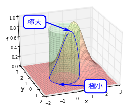
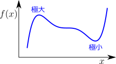
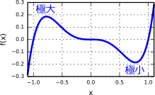
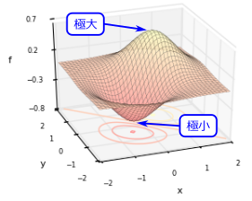
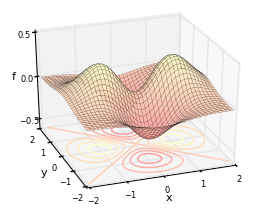
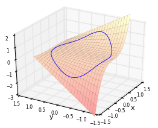
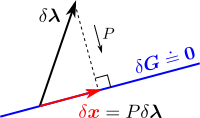
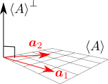

制約条件付き極値問題

制約条件付き極値問題とは、例えば、右図の青曲線上での極大・極小を求める問題である。この青曲線は、「元のグラフである赤曲面に対して、
(𝑥,𝑦)
の取り得る範囲を、単位円上（緑の円筒に対応）に制限したもの」である。このように、元のグラフの定義域が制約を持つ場合の極大・極小を求めたいわけである。
この章では、まず復習として、制約条件がない場合を扱う（1変数、多変数）。その後、本題に入る。10.11変数関数の極値問題10.2多変数関数の極値問題10.3制約条件付き極値問題10.4参考 ラグランジュの未定乗数法また、「制約条件付き」極値問題を「制約条件のない」極値問題に変換する手法である、ラグランジュの未定乗数法についても述べる。なお、「極値問題」という代わりに、同じような文脈で、「最大・最小問題」や「最適化問題」と言ったりもする。
10.11変数関数の極値問題
まず、制約がない場合の極値問題から始める。この節では、1変数関数の停留条件(1)を導く。
10.1.11変数関数の停留条件：式(1)

知りたいのは、右図のように、ある関数
𝑓(𝑥)
が極大または極小となる点
𝑥
（＝極値点）である。同図からも分かるように、極値点では、グラフの接線の傾きが
0
になる。この「接線の傾きが
0
」という条件（＝停留条件）を書き下したい。停留点このように、接線の傾きが0になる点のことを、停留点という。
停留条件を求める
接線を考えるということは、1次近似を考えればよい。任意の点
𝑥
の周辺で
𝑓(𝑥+𝛿𝑥)
を1次近似すると、
𝑓
の変化量
𝛿𝑓
は以下のように書ける：（力学編第1章の【1.1-注1】）
𝛿𝑓≡𝑓(𝑥+𝛿𝑥)−𝑓(𝑥)≐𝑑𝑓𝑑𝑥𝛿𝑥
停留点条件は「
𝛿𝑥
を変化させても
𝛿𝑓
が変化しないこと」即ち「赤字部分が
0
」である：
𝑑𝑓𝑑𝑥=0(1)
極値点は停留条件(1)の解の中にある
この停留条件(1)を満たす解
𝑥
を全て求めれば、その中に全ての極値点が含まれることになる（定義域の境界にある極値点を除く）。ただし、停留条件は、あくまで接線の傾きが0になるための条件なので、その解が全て極値点になるとは限らない（以下の例題参照）。なお、細かいことを言えば、
𝑥
の定義域の端に極値点がある場合、接線の傾きがゼロにならず、式(1)を満たさないことがある（それを極値点とみなすかという問題もあるが）。
10.1.2例題

例として、右図の関数
𝑓(𝑥)=𝑥5−𝑥3
の極値点を求める。停留条件(1)は
𝑑𝑓𝑑𝑥=5𝑥2(𝑥2−35)=0
となる。よって停留点は、この解となる3点
𝑥=±√35,0
である。
同図より、
𝑥=−√35=−0.775⋯
は極大点、
𝑥=√35
は極小点であり、
𝑥=0
はどちらでもない。得られた停留点が実際に極値点になっているかどうかの判定は、グラフを見て行うこととし、深入りはしないことにする。
10.2多変数関数の極値問題
この節では、停留条件(1)を多変数関数の場合に拡張し、停留条件(3)を導く。まだ制約条件は考えない。
10.2.1多変数関数の停留条件：式(3)

右図のような多変数関数
𝑓(𝒙)
の極値点を知りたい。図からもわかるように、極値点では、グラフの接平面の傾きが
0
（＝水平）となっている。即ち、この場合も、接平面の傾きが
0
という停留条件を考えればよい（前節の「接線」を「接平面」に置き換えるだけ）。
停留条件を求める
1変数の場合と同様に、任意の点
𝒙
の周辺での1次近似を考えると、以下のようになる：（力学編第3章の【3.2-注2】）
𝛿𝑓≡𝑓(𝒙+𝛿𝒙)−𝑓(𝒙)≐(∇𝑓)T𝛿𝒙∇𝑓≡⎡⎢
⎢⎣𝜕𝑥𝑓𝜕𝑦𝑓⋮⎤⎥
⎥⎦(2)
停留条件は「任意の
𝛿𝒙
に対して
𝛿𝑓=0
」即ち「赤字部分が
𝟎
」である：
∇𝑓=𝟎(3)
極値点は停留条件(3)の解の中にある
全ての極値点
𝒙
は、この停留条件(3)の解となる（定義域の境界の極値点を除く）。前節と同様に、停留条件を満たす
𝒙
が全て極値点であるとは限らない（以下の例題参照）。
10.2.2例題

例として、右図の関数
𝑓(𝒙)=(𝑥2−𝑦2)𝑒−𝑥2−𝑦2
の極値点を求める。停留条件(3)は
∇𝑓=[𝜕𝑥𝑓𝜕𝑦𝑓]=2𝑒−𝑥2−𝑦2[𝑥(1−𝑥2+𝑦2)−𝑦(1+𝑥2−𝑦2)]=𝟎
となる。よって停留点は、この解となる5点
(𝑥,𝑦)=(±1,0),(0,±1),(0,0)
である。
同図より、
(±1,0)
は極大点、
(0,±1)
は極小点である。しかし、
(0,0)
はどちらでもない（鞍点という）。鞍点極大でも極小でもない停留点を鞍点（あんてん）という。鞍点という名称は、その点の周辺で、グラフの形状が馬の鞍のようになっていることに由来する。
10.3制約条件付き極値問題
さて、ようやくここから制約条件を課した場合を扱う。この節では、制約条件を持つ場合の停留条件が、式(11)で与えられることを見る。また、「制約条件がない場合の極値問題」に変換する手法である、ラグランジュの未定乗数法（【10.4-注2】）についても述べる。
10.3.1素直に書き下した停留条件(7) → どうやって解く？
右図は、冒頭の図と同じものである。この青曲線上での極値問題を考えたいわけである。青曲線は、赤曲面
𝑓=𝑓(𝒙)
の定義域を、緑の円柱
𝐺(𝒙)≡√𝑥2+𝑦2−1=0
上に制約したもの（＝2つのグラフが交わる部分）である。
形式的な停留条件はすぐに書ける：式(4)
同図からもわかるように、極値点ではやはり、青曲線の接線の傾きが0になっている。よって、制約条件がない場合と同様に「接空間（＝接線や接平面の総称）の傾きが0」という停留条件を考えればよいことになる。即ち、（制約条件を満たす）任意の
𝛿𝒙
に対して、
𝛿𝑓
は
0
となる：
𝛿𝑓≐(∇𝑓)T𝛿𝒙=0(4)
ただし、
𝒙
には制約条件
𝐺=0
がかかっているので、
𝛿𝒙
は、この制約条件を満たすものに限られる。前節の式(3)の場合は、
𝛿𝒙
が任意の値をとれたので、
∇𝑓=𝟎
が導けた。今の場合、そこまでは言えない。
𝛿𝒙 が満たすべき条件を求める：式(6)
よって考えるべきは、
𝛿𝒙
が満たすべき条件である。今の例では制約条件
𝐺=0
は1つだけだが、より変数が多い場合には複数あってもよいので、制約条件をベクトル表記しておく：
𝑮(𝒙)≡⎡⎢
⎢⎣𝐺1𝐺2⋮⎤⎥
⎥⎦=𝟎(5)
𝛿𝒙
に対する条件は、点
𝒙
から
𝛿𝒙
だけ移動したときに、制約条件(5)が破れないこと、即ち
𝛿𝑮≐⎡⎢
⎢
⎢⎣(∇𝐺1)T(∇𝐺2)T⋮⎤⎥
⎥
⎥⎦⏟__⏟__⏟(∇𝑮)T𝛿𝒙=𝟎∇𝑮≡[∇𝐺1∇𝐺2⋯](6)
である。
停留条件が一応得られた
式(4)と(6)を合わせると、停留条件は
制約条件(∇𝑮)T𝛿𝒙=𝟎を満たす全ての𝛿𝒙に対して、接空間の傾きがゼロ：(∇𝑓)T𝛿𝒙=0(7)
となる。ただしこれは、前節の式(3)ような「方程式を解けば停留点が得られる」という形をしていない。そこで次に、これをどのように解くかを考える。
10.3.2制約条件付き極値問題の解法：【10.3-注1】
式(7)が解きづらいのは、
𝛿𝒙
に制約条件(6)がかかっているからである。
停留条件から制約条件を消す：式(9)
そこで、制約条件を消すことを考える。そのためには、
𝛿𝒙
を生成する基底ベクトル
𝒂1,𝒂2,.…
が分かっていればよい。そうすれば、任意の
𝛿𝒙
が、
𝒂1,𝒂2,.…
の1次結合
𝛿𝒙=∑𝑖𝒂𝑖𝛿𝜆𝑖=[𝒂1𝒂2⋯]⏟__⏟__⏟≡𝐴𝛿𝝀(8)
で書けることになる。これを使うと、停留条件(7)が綺麗になる：
(∇𝑓)T𝐴=𝟎(9)
導出停留条件(4)に式(8)の
𝛿𝒙
を代入する。係数
𝛿𝝀
は任意の値をとれるので、
𝛿𝝀
の係数がゼロになる。よって式(9)となる。
◼
制約条件付き極値問題の解法
実際に
𝐴
を求めるには、
∇𝐺1,∇𝐺2,…
の全てと直交するベクトル
𝒂1,𝒂2,…
を
(dim𝒙−dim𝑮)個
だけ見つけてくればよい。もちろん
𝒂𝑖
は1次独立とする。
∇𝐺𝑖
が1次独立でない場合にも使えるようにするなら、
dim𝑮
の部分を
rank∇𝑮
（＝
∇𝐺𝑖
の中で1次独立なものの最大個数）に置き換えるべきである。以上の手順を、以下の【10.3-注1】にまとめておく。手計算で解ける簡単な問題であれば、この方法で十分である。手計算では解けないような複雑な問題では、ラグランジュの未定乗数法（以下の【10.4-注2】）などを用いて数値的に解くことになる。
【10.3-注1】制約条件付き極値問題の解法
変数
𝒙
が取れる値に制約条件
𝑮(𝒙)≡⎡⎢
⎢⎣𝐺1(𝒙)𝐺2(𝒙)⋮⎤⎥
⎥⎦=𝟎(10)
がかかっているとする。この条件下で、与えられた関数
𝑓(𝒙)
の極値点を求めたい。
解法
まず、
∇𝐺1,∇𝐺2,…
の全てと直交するベクトル
𝒂1,𝒂2,…,𝒂𝑛
（1次独立）を
𝑛=dim𝒙−rank∇𝑮
（＝
𝒙
の自由度）だけ見つける。これらを並べた行列を
𝐴
とおく：
𝐴=[𝒂1𝒂2⋯𝒂𝑛]
求める極値点は、停留条件：
(∇𝑓)T𝐴=𝟎(11)
と制約条件(10)からなる連立方程式の解である。もちろん、鞍点の可能性があるので、必要条件である。この解が全て極値点になるわけではない。
10.3.3例題

例として、右図の青線上の極値点を求める。これは、関数
𝑓(𝒙)=𝑥3(1−𝑦)
に対して、単位円の制約条件
𝐺(𝒙)≡𝑥2+𝑦2−1=0(12)
を課したものである。
停留条件を書き下す
まず、
𝑓,𝐺
の微分はそれぞれ
∇𝑓=𝑥2[3(1−𝑦)−𝑥],∇𝐺=2[𝑥𝑦]
である。停留条件(11)の
𝐴
として、
∇𝐺
と垂直なベクトルを取ればよいので
𝐴=[𝑦−𝑥]
としよう。以上により、停留条件(11)は
(∇𝑓)T𝐴=𝑥2[3(1−𝑦)−𝑥]T[𝑦−𝑥]∣制約条件𝑥2=1−𝑦2を使って𝑥2を消去=4(𝑦−1)2(𝑦+1)(𝑦+14)=0(13)
となる。
極値点を選ぶ
停留点は式(13)の解なので、
𝑦
に関して
𝑦=±1,−14
である。
𝑥
についても制約条件(12)から決まる。こうして得られる4点
𝒙=(0,±1),(±√154,−14)
が停留点である。上図より、
(−√154,−14)
は極小点、
(√154,−14)
は極大点であり、
(0,±1)
は鞍点である。なお、この問題は、極座標
(𝑟,𝜃)
を使うと
𝜃
に関する制約無し極値問題に帰着でき、より簡単に解ける。このように、制約条件を簡単に消去できないか考えることも有用である。
10.4参考 ラグランジュの未定乗数法
上述の制約条件付き極値問題は、制約条件の無い極値問題（11.2節）に変換できることが知られている。そのようにして何が嬉しいかというと、数値的に問題を解く場合に、「制約条件の無い極値問題で使われる優れた計算手法」（準ニュートン法など）が、そのまま流用できるのである。制約条件の有無にかかわらず、停留条件が解析的に解けることはあまりない。多くの場合、計算機を用いて数値的に解くことになる。
まず、停留条件を、幾何学的に自然な式(17)に変換する所から始める。
10.4.1停留条件を 𝑓,𝑮 から直接書き下す：式(17)
式(9)の導出では、基底ベクトル
𝐴
が何らかの方法で計算できる必要があった。もし、
𝐴
を使わずに停留条件を直接書き下せれば理論的に美しい（計算が容易になるかは別として）。
射影行列を求めたい
式(9)の議論を参考にするならば、
𝛿𝒙
を、制約されていないベクトル
𝛿𝝀
を用いて
𝛿𝒙=𝑃𝛿𝝀
の形で書ければ、停留条件は
(∇𝑓)T𝑃=𝟎(14)
となるわけである。このような都合の良い行列
𝑃
を、
∇𝑮
から直接作れないだろうか。これは幾何学の問題として解釈できる。

まず、任意のベクトル
𝛿𝝀
を、制約条件を満たす成分
𝛿𝝀∥
（＝
∇𝑮
と垂直な成分）とそれ以外の成分
𝛿𝝀⟂
（＝
∇𝐺𝑖
の1次結合で書ける成分）の和
𝛿𝝀=𝛿𝝀∥+𝛿𝝀⟂
に分解する。この時、
𝛿𝝀∥
だけを取り出す射影行列
𝑃
（右図）：
𝑃𝛿𝝀=𝛿𝝀∥(=𝛿𝒙)(15)
を求めることができれば、この
𝑃
の下で停留条件(14)が成り立つ。
射影行列(16)を使った停留条件(17)
このような射影行列
𝑃
は、
∇𝑮
を用いて書き下すことができる。実際、以下のようになる：
𝑃=1−∇𝑮[(∇𝑮)T∇𝑮]−1(∇𝑮)T(16)
導出以下の【10.4-注1】において、
𝐴
を
∇𝑮
とすればよい。式(18)が
⟨∇𝑮⟩⟂
、即ち、制約条件を満たす空間への正射影行列になる。
◼
なお、行列
∇𝑮
がフルランクでない場合は、
[⋯]−1
部分が存在しなくなる。その場合でも、詳細は割愛するが、ムーア・ペンローズの擬似逆行列
(∇𝑮)+
を使うと、式(16)は
𝑃=1−∇𝑮(∇𝑮)+
と書ける。上述のように、この
𝑃
を用いて、停留条件は式(14)で与えられる：（再掲）
𝑃∇𝑓=𝟎(17)
見やすくするために式(14)の転置を取った。
𝑃
は対称行列であることに注意。この式は、
∇𝑓
が制約面と直交していること（
∇𝑓=(∇𝑮)𝝀
の形で書けること）を要求しており、式(4)を幾何学的に自然な形で表したものになっている。（きれいな式だが、これを直接使って問題を解くことはまずない。）
【10.4-注1】正射影行列

複数の1次独立なベクトル
𝒂1,𝒂2,…
をまとめて、行列
𝐴=[𝒂1𝒂2⋯]
で表す。
𝐴
が張る空間（＝
𝐴𝝀
の形でかけるベクトルの集合が作る空間）を
⟨𝐴⟩
とおき、
⟨𝐴⟩
の直交補空間（＝
⟨𝐴⟩
と直交するベクトルの集合が作る空間）を
⟨𝐴⟩⟂
とおく（右図）。
この時、
⟨𝐴⟩
への正射影行列
𝑃∥
および、
⟨𝐴⟩⟂
への正射影行列
𝑃⟂
は、以下のようになる：
𝑃∥=𝐴(𝐴T𝐴)−1𝐴T𝑃⟂=1−𝑃∥(18)
証明
実際に、
𝑃∥
が正射影行列になっていることを確認する（
𝑃⟂
についても同様なので省略）。まず、任意のベクトル
𝒙
を、
⟨𝐴⟩
の要素
𝒙∥
と
⟨𝐴⟩⟂
の要素
𝒙⟂
に分解：
𝒙=𝒙∥+𝒙⟂
する。示したいのは、
𝑃∥𝒙∥=𝒙∥
かつ
𝑃∥𝒙⟂=𝟎
である。まず、
𝒙∥
については、
𝒙∥=𝐴𝝀
の形で表せることより
𝑃∥𝒙∥=𝐴(𝐴T𝐴)−1𝐴T𝐴⏟___⏟___⏟1𝝀=𝐴𝝀=𝒙∥
また、
𝒙⟂
については
𝑃∥𝒙⟂=𝐴(𝐴T𝐴)−1𝐴T𝒙⟂⏟𝟎=𝟎
よって、確かに成立している。
◼
10.4.2ラグランジュの未定乗数法
ラグランジュの未定乗数法の方法は簡単で、以下の【10.4-注2】に従えばよい。即ち、ラグランジュ関数(19)を定義し、制約のない停留条件(20)の解を求めれば、その時の
𝒙
は、元の制約条件付き極値問題の停留点になっている。
【10.4-注2】ラグランジュの未定乗数法
まず、ラグランジュ関数
𝐿
を
𝐿(𝒙,𝝀)=𝑓+𝑮T𝝀(19)
と定義する（
𝑓,𝑮
は
𝒙
の関数）。次に、
𝒙,𝝀
が自由な値をとれるとして、
𝐿
の停留条件を考える：
∇𝐿≡[∇𝒙𝐿∇𝝀𝐿]=𝟎(20)
（
∇𝒙
は
𝒙
での微分、
∇𝝀
は
𝝀
での微分。）するとこの解は、制約条件
𝑮(𝒙)=𝟎
下における関数
𝑓(𝒙)
の停留点になる。この手法をラグランジュの未定乗数法といい、
𝝀
を（ラグランジュの）未定乗数という。
証明
停留条件(20)をあらわに書くと
[∇𝒙𝐿∇𝝀𝐿]≡[∇𝑓+(∇𝑮)𝝀𝑮]=𝟎(21)
となる。第2成分は、制約条件
𝑮=𝟎
そのものである。従って、第1成分が停留条件(17)と等価であることを言えばよい。
式(21) ⇒ (17)
式(21)の第1成分に正射影行列
𝑃
（式(16)）を左乗すると、
𝝀
の項が消えて、停留条件(17)に一致する。
式(17) ⇒ (21)
逆に、停留条件(17)が成り立っている時
𝝀=−[(∇𝑮)T∇𝑮]−1(∇𝑮)T∇𝑓
とおけば、式(21)の第1成分の式が成り立つ。
◼